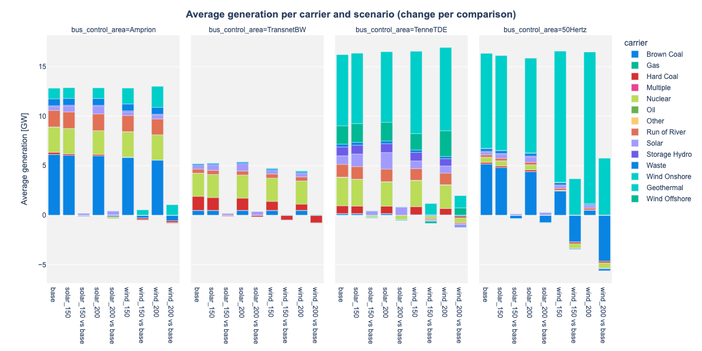

MESQUAL 101: StudyManager and Dataset Fundamentals¶
Introduction¶
This notebook demonstrates the core functionality of MESQUAL's StudyManager - the central component for handling multiple scenarios and scenario comparisons in energy system modeling studies. It showcases how MESQUAL's architecture simplifies working with complex multi-scenario analyses through a consistent and powerful interface.
Rather than juggling separate data structures for each scenario, MESQUAL provides a unified framework where: - Every data element is accessible through a consistent API - Scenarios and comparisons are handled through the same paradigm - Data relationships are automatically preserved and utilized
We'll use PyPSA's Scigrid DE example dataset for this demonstration, but the same principles apply regardless of which modeling platform you use.
Setup¶
import os
import logging
import warnings
import pandas as pd
import pypsa
from IPython.display import Image
from mesqual import StudyManager
from mesqual.utils.plotly_utils.plotly_theme import PlotlyTheme
from mesqual_pypsa import PyPSADataset
# Directory setup
os.chdir(os.path.dirname(os.path.dirname(os.path.dirname(os.getcwd()))))
# Configuration for cleaner output
logging.basicConfig(level=logging.ERROR)
warnings.filterwarnings("ignore", category=DeprecationWarning)
pd.set_option('display.max_columns', 6)
pd.set_option('display.width', 1000)
PlotlyTheme().apply()
# Register study-specific interpreters (details on this will be covered in a later notebook)
from studies.study_01_intro_to_mesqual.src.study_specific_model_interpreters import ControlAreaModelInterpreter, ScigridDEBusModelInterpreter
PyPSADataset.register_interpreter(ControlAreaModelInterpreter)
PyPSADataset.register_interpreter(ScigridDEBusModelInterpreter)
Loading Example Data¶
For this demonstration, we use a PyPSA Scigrid DE example with a base network and four scenarios with increased solar and wind capacity. All networks have already been optimized.
# Loading networks (all have already been optimized, so the results are included)
study_folder = 'studies/study_01_intro_to_mesqual'
networks_folder = os.path.join(study_folder, 'data/networks_scigrid_de')
n_base = pypsa.Network(os.path.join(networks_folder, 'base.nc'))
n_solar_150 = pypsa.Network(os.path.join(networks_folder, 'solar_150.nc'))
n_solar_200 = pypsa.Network(os.path.join(networks_folder, 'solar_200.nc'))
n_wind_150 = pypsa.Network(os.path.join(networks_folder, 'wind_150.nc'))
n_wind_200 = pypsa.Network(os.path.join(networks_folder, 'wind_200.nc'))
The StudyManager¶
The StudyManager is the central component of MESQUAL, organizing all scenarios and scenario comparisons for efficient access and analysis.
study = StudyManager.factory_from_scenarios(
scenarios=[
PyPSADataset(n_base, name='base'),
PyPSADataset(n_solar_150, name='solar_150'),
PyPSADataset(n_solar_200, name='solar_200'),
PyPSADataset(n_wind_150, name='wind_150'),
PyPSADataset(n_wind_200, name='wind_200'),
],
comparisons=[('solar_150', 'base'), ('solar_200', 'base'), ('wind_150', 'base'), ('wind_200', 'base')],
export_folder=os.path.join(study_folder, 'non_versioned/output'),
)
In just a few lines of code, we've organized all scenarios and defined which comparisons we're interested in (here, comparing each scenario to the base case).
The Dataset Concept¶
The core building block in MESQUAL is the Dataset class. The key insight is that:
Everything is a Dataset!¶
- Individual scenarios are Datasets
- Collections of scenarios are Datasets
- Scenario comparisons are Datasets
- Collections of comparisons are Datasets
This means you interact with all entities through a consistent interface, regardless of whether you're working with a single scenario or a complex collection of scenario comparisons.
Working with Datasets¶
Let's explore the fundamental operations with Datasets:
Accessing a Single Dataset¶
ds_base = study.scen.get_dataset('base')
Fetching Data¶
The primary method for interacting with Datasets is the fetch() method:
df_price_base = ds_base.fetch('buses_t.marginal_price')
print(df_price_base.head())
Bus 1 10 100 ... 98 99 99_220kV
snapshot ...
2011-01-01 00:00:00 -0.439753 5.772135 23.120287 ... 1.890824 23.723792 23.685443
2011-01-01 01:00:00 -0.578449 6.100599 22.531275 ... 1.960914 23.186991 23.144293
2011-01-01 02:00:00 -0.582087 6.071084 22.106222 ... 1.954744 22.747326 22.705514
2011-01-01 03:00:00 -0.596210 6.139415 21.498113 ... 1.995093 22.117870 22.077360
2011-01-01 04:00:00 -0.609622 6.164469 20.391625 ... 2.031251 20.979582 20.940890
[5 rows x 585 columns]
For PyPSA users, note that this produces the same output as n_base.buses_t.marginal_price but provides a consistent interface across all platforms.
Discovering Available Data¶
To see what data is available in a Dataset:
accepted_flags = ds_base.accepted_flags
list(sorted(accepted_flags))[:15] # Just showing the first 15
['buses',
'buses_t.marginal_price',
'buses_t.p',
'buses_t.q',
'buses_t.v_ang',
'buses_t.v_mag_pu',
'buses_t.v_mag_pu_set',
'carriers',
'control_areas',
'generators',
'generators_t.efficiency',
'generators_t.marginal_cost',
'generators_t.marginal_cost_quadratic',
'generators_t.mu_lower',
'generators_t.mu_p_set']
Or to find specific types of data:
accepted_flags_for_lines = ds_base.get_accepted_flags_containing_x('lines')
accepted_flags_for_lines
{'lines',
'lines_t.mu_lower',
'lines_t.mu_upper',
'lines_t.p0',
'lines_t.p1',
'lines_t.q0',
'lines_t.q1',
'lines_t.s_max_pu'}
From Simple to Powerful: Scenario Collections¶
While the individual Dataset interface is useful, MESQUAL's true power emerges when working with multiple scenarios.
Let's fetch the marginal price data for all scenarios at once:
df_price = study.scen.fetch('buses_t.marginal_price')
print(df_price.head())
dataset base ... wind_200
Bus 1 10 100 ... 98 99 99_220kV
snapshot ...
2011-01-01 00:00:00 -0.439753 5.772135 23.120287 ... 0.072306 23.828566 23.794191
2011-01-01 01:00:00 -0.578449 6.100599 22.531275 ... -0.056472 22.380868 22.329086
2011-01-01 02:00:00 -0.582087 6.071084 22.106222 ... -0.052310 20.490690 20.442924
2011-01-01 03:00:00 -0.596210 6.139415 21.498113 ... -0.152777 18.640298 18.596510
2011-01-01 04:00:00 -0.609622 6.164469 20.391625 ... -0.120450 15.923631 15.889469
[5 rows x 2925 columns]
The result is a MultiIndex DataFrame with an additional 'dataset' level containing all scenario data in a single structure.
Scenario Comparisons¶
Similarly, we can get comparison data (deltas between scenarios):
df_price_change = study.comp.fetch('buses_t.marginal_price')
print(df_price_change.head())
dataset solar_150 vs base ... wind_200 vs base
Bus 1 10 100 ... 98 99 99_220kV
snapshot ...
2011-01-01 00:00:00 0.209435 0.022953 0.020959 ... -1.818518 0.104774 0.108749
2011-01-01 01:00:00 0.017964 0.064642 -0.080598 ... -2.017386 -0.806122 -0.815207
2011-01-01 02:00:00 0.013235 0.082471 -0.002842 ... -2.007054 -2.256636 -2.262590
2011-01-01 03:00:00 0.026943 0.012270 -0.156701 ... -2.147870 -3.477572 -3.480850
2011-01-01 04:00:00 0.000889 -0.124771 -0.887855 ... -2.151701 -5.055950 -5.051421
[5 rows x 2340 columns]
Each column in this DataFrame represents the difference between a variation scenario and the base scenario.
Visualization Example¶
Now let's see this in action with a visualization. We'll create a unified analysis of average generation by carrier, control area, and scenario:
import plotly.express as px
from mesqual.utils.pandas_utils import flatten_df, prepend_model_prop_levels, filter_by_model_query
generators_model_df = study.scen.get_dataset('base').fetch('generators')
data = study.scen_comp.fetch('generators_t.p')
data = prepend_model_prop_levels(data, generators_model_df, 'bus_control_area', 'carrier')
data = data.mean().groupby(level=['dataset', 'bus_control_area', 'carrier']).sum()
data = data / 1e3 # MW to GW
data_flat = data.to_frame('value').reset_index()
fig = px.bar(
data_frame=data_flat,
y='value',
x='dataset',
facet_col='bus_control_area',
color='carrier',
category_orders={'bus_control_area': ['Amprion', 'TransnetBW', 'TenneTDE', '50Hertz']},
labels={'value': 'Average generation [GW]'},
)
fig.update_layout(title='<b>Average generation per carrier and scenario (change per comparison)</b>', width=1200)
fig.update_xaxes(title=None)
# Save and display the image
image_path = study.export_path('generation_barchart.png')
fig.update_layout(height=600, width=1200)
fig.write_image(image_path)
Image(image_path)

Key Takeaways¶
- Unified Interface: Whether working with individual scenarios or complex collections, the same methods apply
- Efficient Analysis: Analyze multiple scenarios with the same code you'd use for one
- Automatic Comparison: Calculate scenario deltas without manual calculations
- Hierarchical Organization: Study → Scenarios → Individual Datasets provides a logical structure
- Consistency Across Platforms: The same code works regardless of your modeling platform
In the next notebook, we'll explore more advanced data fetching and transformation techniques that build on these fundamentals.